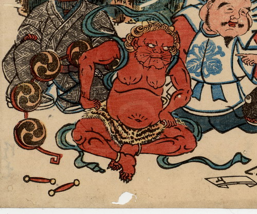

雷。赤い肌で頭に2本角を生やしている。肩衣と虎皮の腰巻きのみを身につけて、座っている。後ろには連太鼓と撥が置かれている。
出典：親書誌：U426_nichibunken_0193：差出し申御詫一札之事；サシダシモウスオワビイッサツノコト／日付：2010／資源識別子：U426_nichibunken_0193_0003_0000
Copyright (c)2010- International Research Center for Japanese Studies, Kyoto, Japan. All rights reserved.